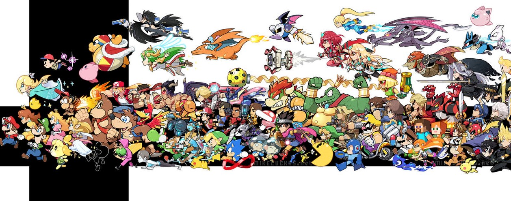

Le système de jeu de la série Super Smash Bros. diffère radicalement de celui de la plupart des jeux de
combat traditionnels. Au lieu de vaincre en épuisant la barre de vie de l'adversaire, un joueur de Super
Smash Bros. remporte le combat en propulsant ses adversaires hors de l'arène.
Pour cela, il faut frapper à répétition son adversaire afin de faire monter sa jauge de pourcentage
de dégâts. Plus elle est élevée, plus les coups portés le feront voler loin pour l'expulser de
l'écran.
Cette particularité du système de combat rend la série Super Smash Bros. unique en son genre dans le
sens où elle allie l'aspect classique des jeux de combats, consistant à enchaîner des coups en appuyant
sur des combinaisons de touches, à la mobilité d'un jeu de plateforme, puisque les personnages doivent
constamment se déplacer au sein de différentes plateformes constituants les arènes et effectuer des sauts
pour tenter de revenir sur l’arène duquel ils auraient été éjectés.
Les coups sont également donnés de manière assez novatrice pour un jeu de combat puisqu'ils dépendent
de la direction dans laquelle le joueur oriente le stick directionnel au moment où il donne le coup. Deux
types d'attaques se distinguent également : les coups normaux et les coups spéciaux. Les coups spéciaux
diffèrent d'un personnage à un autre. Les attaques smash sont quant à elles des coups normaux à la
puissance amplifiée et pouvant être chargées qui sont effectuées en pressant simultanément le bouton
d'attaque et le stick directionnel dans la direction voulue.
Par ailleurs, divers objets apparaissent dans l'arène pour être ramassés et ainsi faire diminuer son
propre pourcentage de dégâts (soins) ou infliger des dégâts à l'adversaire (armes, pièges, etc).
Il existe également une attaque ultime unique à chaque personnage, le Smash final. Lors de ce coup apparu
dans Brawl, l'adversaire subit de lourds dégâts. Ce coup est disponible en détruisant une balle Smash,
soit une version moins puissante dans Ultimate en complétant une jauge de Smash final.

Les avis émis sur la série Super Smash Bros. sont généralement positifs. La plupart des critiques
adressées au premier épisode ont également été faites aux épisodes suivants.
Super Smash Bros. a reçu des louanges de la presse pour son mode multijoueur. Nintendo Power classe
cette série comme l'une des meilleures expériences multijoueurs de l'histoire de Nintendo, évoquant comme
principale raison sa jouabilité infinie induite par les nombreux coups spéciaux des personnages et ses
combats rapprochés. Toutefois, les critiques ne sont pas unanimes, les principaux défauts relevés étant
que le système de score du jeu n'est pas facile à suivre durant les combats et que le mode solo manque de
fonctionnalités.